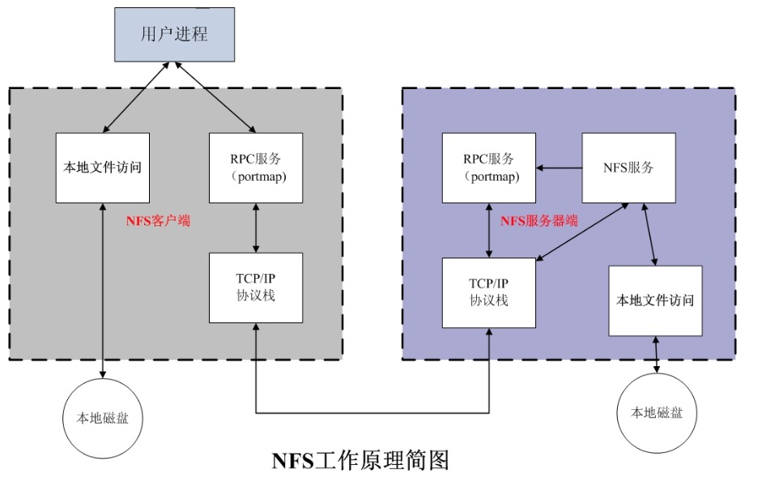
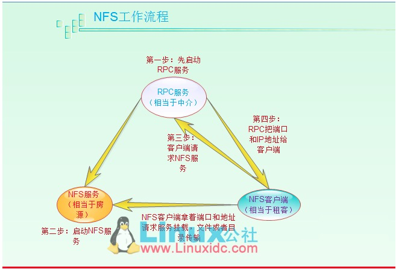

NFS 002服务配置指南
概述
nfs(Network File System)网络文件系统，它允许网络中的计算机直接通过TCP/IP网络共享资源。
在NFS的应用中，本地NFS的客户端应用可以透明地读写位于远端NFS服务器上的文件，就像访问本地文件一样。
服务主要用来服务arfa的日志下载和arfa执行日志记录
nfs分成服务器端和客户端配置
当前nfs
服务器配置在tw071036 web server master
客户端安装有:
tw071037 web server slave
tw071029 az excutor
tw071030 az excutor
tw071031 az excutor
tw071032 az excutor
一、服务器部署文档
-
检查系统是否已安装nfs, rpcbink
rpm -qa|grep nfs
rpm -qa|grep rpcbind -
安装nfs，rpcbind
yum -y install nfs-utils rpcbind
NFS的RPC服务器，Centos5下名字为portmap,CentOS6和CentOS7下名称为rcpbind
NFS软件包
nfs-utils:NFS主程序，包含rpc.nfsd rpc.mount两个deamons
rpcbind:RPC主程序 -
创建存放文件的共享目录
mkdir /usr/local/services/arfa_nfs #因为这个目录放在了ssd盘上面
chown -R nobody:nobody #设置权限，允许nobody用户访问 -
编辑/ets/hosts.allow，允许外部程序可以访问
增加如下内容：1 2 3 4#nfs config all:127.0.0.1 rpcbind: ALL :allow mountd: ALL :allow -
编辑/etc/netconfig配置文件，注释掉udp6,tcp6行，禁用ip6,如下:
1 2#udp6 tpi_clts v inet6 udp - - #tcp6 tpi_cots_ord v inet6 tcp - - -
编辑配置文件/etc/exports，设置共享目录，权限，用户，增加如下：
1/usr/local/services/arfa_nfs 10.0.0.0/8(rw,sync,all_squash,anonuid=99,anongid=99)———-下面是各个内容的详细解释———–
格式：共享目录 指定共享对象(共享参数)
对于上面的配置，解释如下：
/usr/local/services/arfa_nfs 共享目录
10.0.0.0/8 共享机器的访问权限
rw：读写
ro：只读
sync： 将数据同步写入内存缓冲区与磁盘中，效率低，但可以保证数据的一致性；
async：是大数据时使用，是先写到缓存区，必要时再写到磁盘里。
all_squash：所有访问用户都映射为匿名用户或用户组；
no_all_squash（默认）：访问用户先与本机用户匹配，匹配失败后再映射为匿名用户或用户组；
root_squash（默认）：将来访的root用户映射为匿名用户或用户组；
no_root_squash：来访的root用户保持root帐号权限；
wdelay（默认）：检查是否有相关的写操作，如果有则将这些写操作一起执行，这样可以提高效率；
no_wdelay：若有写操作则立即执行，应与sync配合使用；
subtree_check ：若输出目录是一个子目录，则nfs服务器将检查其父目录的权限；
no_subtree_check（默认）：即使输出目录是一个子目录，nfs服务器也不检查其父目录的权限，这样可以提高效率；
anonuid anongid anon 意指 anonymous (匿名者) 前面关于 *_squash 提到的匿名用户的 UID 设定值，通常为 nobody(nfsnobody)，但是你可以自行设定这个 UID 的值！
当然，这个 UID 必需要存在于你的 /etc/passwd 当中！
anonuid 指的是 UID 而 anongid 则是群组的 GID 啰 99 是nobody用户的uid和gid，可以使用id nobody命令查看
————解释含义完成——————exportfs -r 配置生效
-
配置服务端口号,编辑文件/etc/sysconfig/nfs
1 2 3 4 5RQUOTAD_PORT=30001 LOCKD_TCPPORT=30002 LOCKD_UDPPORT=30002 MOUNTD_PORT=30003 STATD_PORT=3000430001 是 rpc.rquotad
30002 是 nlockmgr块管理
30003 是 rpc.mountd
111端口是 rpcbind的端口portmapper管理
2049端口是 nfs，nfs_acl管理 -
iptables配置，允许防火墙访问，编辑配置文件/etc//sysconfig/iptables
1 2 3 4 5 6-A RH-Firewall-1-INPUT -s 10.0.0.0/8 -p tcp -m tcp --dport 111 -j ACCEPT -A RH-Firewall-1-INPUT -s 10.0.0.0/8 -p udp -m udp --dport 111 -j ACCEPT -A RH-Firewall-1-INPUT -s 10.0.0.0/8 -p tcp -m tcp --dport 2049 -j ACCEPT -A RH-Firewall-1-INPUT -s 10.0.0.0/8 -p udp -m udp --dport 2049 -j ACCEPT -A RH-Firewall-1-INPUT -s 10.0.0.0/8 -p tcp -m tcp --dport 30001:30004 -j ACCEPT -A RH-Firewall-1-INPUT -s 10.0.0.0/8 -p udp -m udp --dport 30001:30004 -j ACCEPT——————重启防火墙,使配置生效——————-
service iptables restart -
注意先启动rpcbind再启动nfs，
启动rpcbind服务:
service rpcbind start -
启动nfs服务
service nfs restart -
查看RPC服务注册状态
rpcinfo -p localhost
输出如下：1 2 3 4 5 6 7 8 9 10 11 12 13 14 15 16 17 18 19 20 21 22 23 24 25 26 27 28 29 30 31 32 33program vers proto port service 100000 4 tcp 111 portmapper 100000 3 tcp 111 portmapper 100000 2 tcp 111 portmapper 100000 4 udp 111 portmapper 100000 3 udp 111 portmapper 100000 2 udp 111 portmapper 100011 1 udp 30001 rquotad 100011 2 udp 30001 rquotad 100011 1 tcp 30001 rquotad 100011 2 tcp 30001 rquotad 100005 1 udp 30003 mountd 100005 1 tcp 30003 mountd 100005 2 udp 30003 mountd 100005 2 tcp 30003 mountd 100005 3 udp 30003 mountd 100005 3 tcp 30003 mountd 100003 2 tcp 2049 nfs 100003 3 tcp 2049 nfs 100003 4 tcp 2049 nfs 100227 2 tcp 2049 nfs_acl 100227 3 tcp 2049 nfs_acl 100003 2 udp 2049 nfs 100003 3 udp 2049 nfs 100003 4 udp 2049 nfs 100227 2 udp 2049 nfs_acl 100227 3 udp 2049 nfs_acl 100021 1 udp 30002 nlockmgr 100021 3 udp 30002 nlockmgr 100021 4 udp 30002 nlockmgr 100021 1 tcp 30002 nlockmgr 100021 3 tcp 30002 nlockmgr 100021 4 tcp 30002 nlockmgr -
显示挂载信息 showmount -e localhost
输出如下：
/usr/local/services/arfa_nfs 10.0.0.0/8 -
配置开机启动：
chkconfig rpcbind on
chkconfig nfs on
二、客户端配置
- 安装客户端
yum -y install nfs-utils - 创建目录
mkdir -p /data/arfa_nfs - 挂载目录
mount -t nfs 10.65.9.136:/usr/local/services/arfa_nfs /data/arfa_nfs -o proto=tcp -o nolock - 卸载nfs配置
umount /data/arfa_nfs - 查看nfs的磁盘挂载信息
df -h1 2 3 4 5 6 7 8---------------客户端挂载参数说明---------------------- noatime 不更新文件的inode访问时间戳，文件很多时此参数可以提高效率。 nodiratime 不更新目录的访问时间戳，同上。 nosuid 关闭挂载目录的suid noexec 不允许执行二进制文件。shell脚本无法直接使用，但是用sh xxx.sh依然可以调用。 rsize 系统每次读取的最大字节，centos6.5默认131072，此参数过小会影响系统的I/O效率. wsize 系统每次写入的最大字节，同上 defaults 使用默认的选项。默认选项为rw、suid、dev、exec、anto nouser与async。 - 查看nfs状态:
服务端 nfsstat -s
客户端 nfsstat -m - 开启nfs调试日志，日志保存在/var/log/message
服务端 rpcdebug -m nfs -s all
客户端 rpcdebug -m nfsd -s all
关闭nfs调试功能：
服务端 rpcdebug -m nfs -s all
客户端 rpcdebug -m nfsd -s all
三、 因为arfa需要web端执行测试，所以需要用nobody ssh到其他机器上面，nobody用户需要有登陆权限，
前提需要关闭所有使用nobody用户端进程
mkdir -p /home/nobody
chown -R nobody.nobody /home/nobody/
usermod -s /bin/bash -d /home/nobody/ nobody
ssh-keygen -t rsa
四、 nfs原理
既然NFS是通过网络来进行服务器端和客户端之间的数据传输，那么两者之间要传输数据就要有想对应的网络端口，
NFS服务器到底使用哪个端口来进行数据传输呢？基本上NFS这个服务器的端口开在2049,但由于文件系统非常复杂。
因此NFS还有其他的程序去启动额外的端口，这些额外的用来传输数据的端口是随机选择的，是小于1024的端口。
-
RPC与NFS如何通讯
因为NFS支持的功能相当多，而不同的功能都会使用不同的程序来启动，每启动一个功能就会启用一些端口来传输数据，因此NFS的功能对应的端口并不固定，客户端要知道NFS服务器端的相关端口才能建立连接进行数据传输，而RPC就是用来统一管理NFS端口的服务，并且统一对外的端口是111，RPC会记录NFS端口的信息，如此我们就能够通过RPC实现服务端和客户端沟通端口信息。PRC最主要的功能就是指定每个NFS功能所对应的port number,并且通知客户端，记客户端可以连接到正常端口上去。 -
RPC是如何知道每个NFS功能端端口呢？
首先当NFS启动后，就会随机的使用一些端口，然后NFS就会向RPC去注册这些端口，RPC就会记录下这些端口，并且RPC会开启111端口，等待客户端RPC的请求，如果客户端有请求，那么服务器端的RPC就会将之前记录的NFS端口信息告知客户端。
如此客户端就会获取NFS服务器端的端口信息，就会以实际端口进行数据的传输了。 提示：在启动NFS SERVER之前，首先要启动RPC服务（即rpcbind服务，下同）否则NFS SERVER就无法向RPC服务区注册，另外，如果RPC服务重新启动，原来已经注册好的NFS端口数据就会全部丢失。因此此时RPC服务管理的NFS程序也要重新启动以重新向RPC注册。特别注意：一般修改NFS配置文档后，是不需要重启NFS的，
直接在命令执行/etc/init.d/nfs reload或exportfs –rv即可使修改的/etc/exports生效。 -
NFS客户端和NFS服务端通讯端过程
(1) 首先服务器端启动RPC服务，并开启111端口
(2) 服务器端启动NFS服务，并向RPC注册端口信息
(3) 客户端启动RPC（rpcbind)服务器，向服务端RPC(rpcbind) 服务请求服务端NFS端口
(4) 服务端端RPC(rpcbind)服务反馈NFS端口信息给客户端
(5) 客户端通过获取端NFS端口来建立和服务端的NFS连接并进行数据的传输

